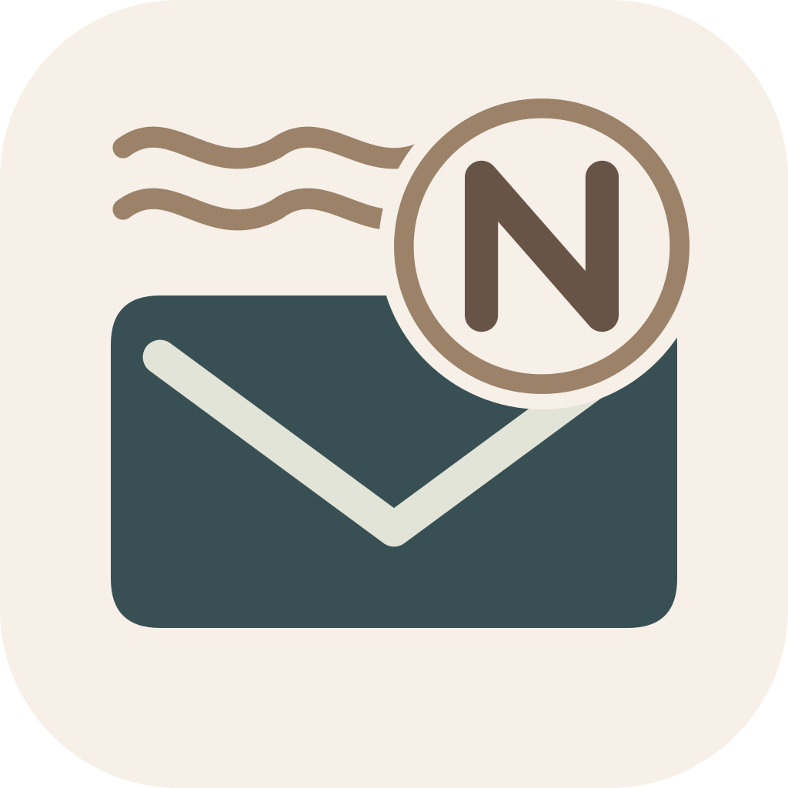

Nuncio
轻量的桌面邮件、日历、联系人与待办客户端
A lightweight desktop client for mail, calendar, contacts and to-do
Nuncio 的交互受经典桌面邮件与日历应用启发，简洁、快速、占用低。它直接连接你的邮件和日历服务商，没有自有服务端，不收集任何遥测数据，你的数据只保存在你的电脑上。
Nuncio's interaction is inspired by classic desktop mail and calendar apps. It talks directly to your mail and calendar providers — there is no Nuncio server and no telemetry; your data stays on your computer.
功能 Features
邮件 MailOutlook.com / Microsoft 365、Gmail、iCloud、QQ、网易及任意 IMAP/SMTP/POP3 账户；合并收件箱、会话视图、离线操作、中文全文搜索。
日历 CalendarGoogle、Outlook、CalDAV 日历；日/周/月/年视图、重复事件、提醒、会议邀请回复。
联系人 PeopleGoogle、Outlook、CardDAV 通讯录；分组、收藏、vCard 导入导出、收件人自动补全。
待办 To DoGoogle Tasks、Microsoft To Do、CalDAV 任务；我的一天、重要、已计划、子步骤、提醒。
平台 Platforms
Windows 10/11（x64）、macOS、Linux。安装包约 6–9 MB。
Windows 10/11 (x64), macOS and Linux. Installers are about 6–9 MB.